PYTHON
downloadPython is an interpreted, high-level, general-purpose programming language. Created by Guido van Rossum and first released in 1991, Python's design philosophy emphasizes code readability with its notable use of significant whitespace. Its language constructs and object-oriented approach aim to help programmers write clear, logical code for small and large-scale projects.

Step 1: Download the Python Installer binaries
- Open the Python website in your web browser. Navigate to the Downloads tab for Windows.
- Click the link for the latest version of Python 3.x. At the time of writing, the latest version is 3.6.1.
- Click on the link to download Windows x86 executable installer if you are using a 32-bit installer. In case your Windows installation is a 64-bit system, then download Windows x86-64 executable installer.
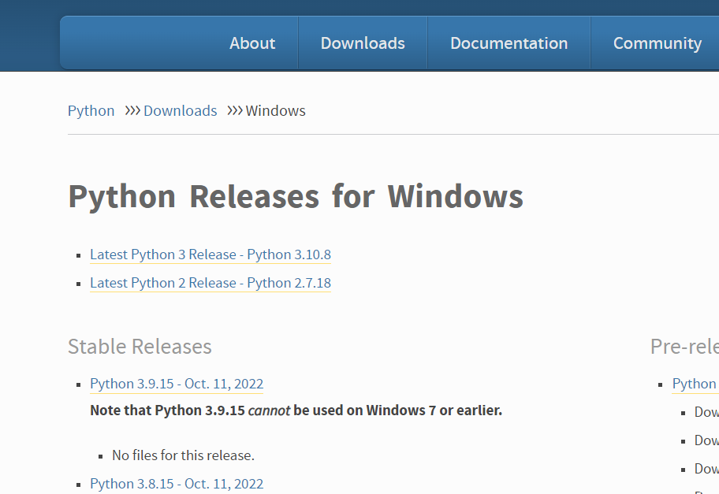
Step 2: Run the Python Installer
- Once the installer is downloaded, run the Python installer.
- Check the Install launcher for all users check box. Further, you may check the Add Python 3.10 to path check box to include the interpreter in the execution path
-
if you have python on your system it'll show like this
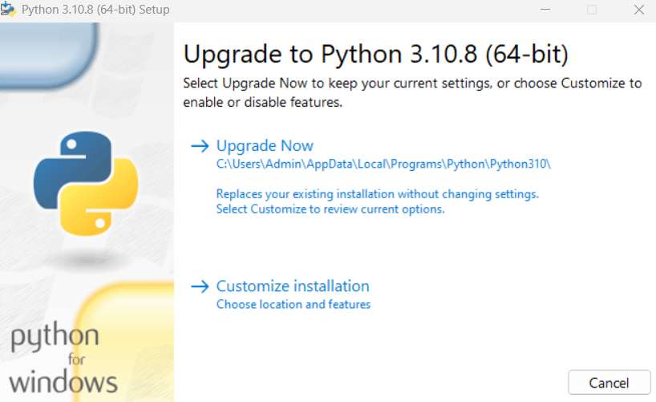
-
if you not have python on your system it'll show install now
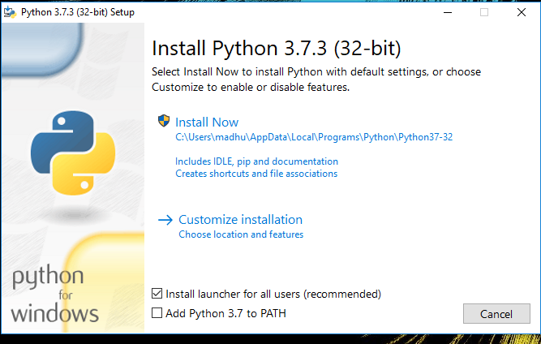
Select Customize installation. Choose the optional features by checking the following check boxes:
3.Documentation
4.pip
5.tcl/tk and IDLE (to install tkinter and IDLE)
6.Python test suite (to install the standard library test suite of Python)
7.Install the global launcher for `.py` files. This makes it easier to start Python
8.Install for all users.
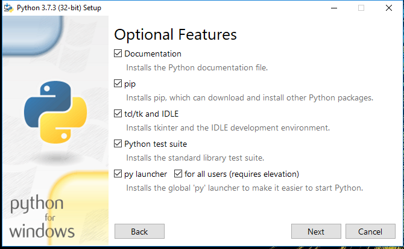
Click Next.9. This takes you to Advanced Options available while installing Python. Here, select the Install for all users and Add Python to environment variables check boxes. Optionally, you can select the Associate files with Python, Create shortcuts for installed applications and other advanced options. Make note of the python installation directory displayed in this step. You would need it for the next step. After selecting the Advanced options, click Install to start installation.
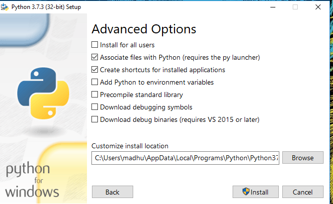
10. Once the installation is over, you will see a Python Setup Successful window.
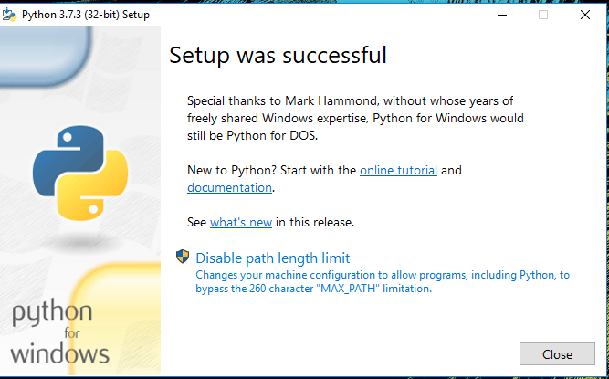
Step 3: Verify Python Installation
You have now successfully installed Python 3.10.8 on Windows 10. You can verify if the Python installation is successful either through the command line or through the IDLE app that gets installed along with the installation. Search for the command prompt and type “python”. You can see that Python 3.10.8 is successfully installed.
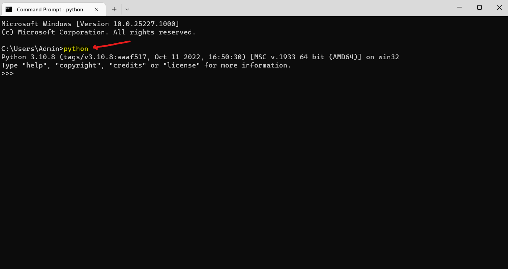
Visualstudio Code
Visual Studio Code is a free source-code editor made by Microsoft for Windows, Linux and macOS. Features include support for debugging, syntax highlighting, intelligent code completion, snippets, code refactoring, and embedded Git. Users can change the theme, keyboard shortcuts, preferences, and install extensions that add additional functionality.
Step 1: Visit the official website of the Visual Studio Code using any web browser like Google Chrome, Microsoft Edge, etc.
download
-
Step 2: Press the “Download for Windows” button on the website to start the download of the Visual Studio Code Application.
-
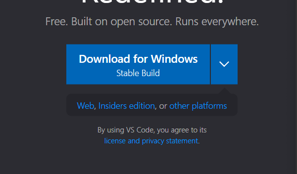
-
Step 3: After the download is complete, double-click on the downloaded file to start the installation process.
-
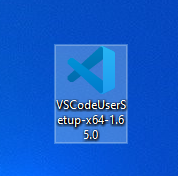
Step 4: Click on the installer icon to start the installation process of the Visual Studio Code.
-
Step 5: After the Installer opens, it will ask you for accepting the terms and conditions of the Visual Studio Code. Click on I accept the agreement and then click the Next button.
-

-
Step 6: Choose the location data for running the Visual Studio Code. It will then ask you for browsing the location. Then click on Next button.
-
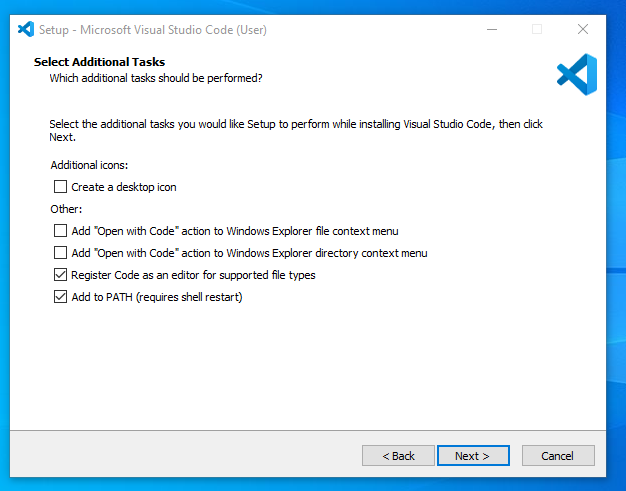
-
Step 7: Then it will ask for beginning the installing setup. Click on the Install button.
-
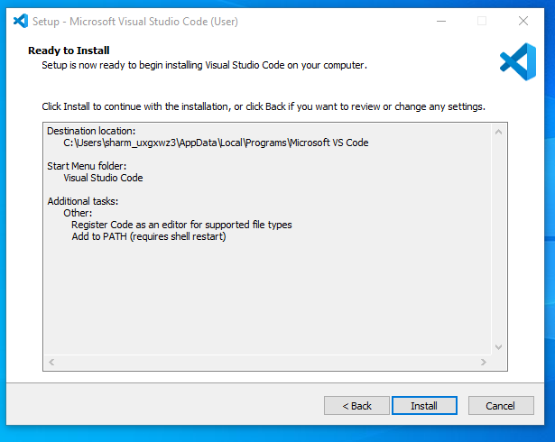
-
Step 8: After clicking on Install, it will take about 1 minute to install the Visual Studio Code on your device.
-

-
Step 9: After the Installation setup for Visual Studio Code is finished, it will show a window like this below. Tick the “Launch Visual Studio Code” checkbox and then click Next.
-
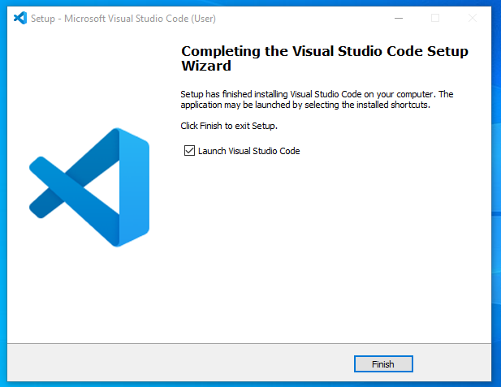
-
Step 10: After the previous step, the Visual Studio Code window opens successfully. Now you can create a new file in the Visual Studio Code window and choose a language of yours to begin your programming journey!
-
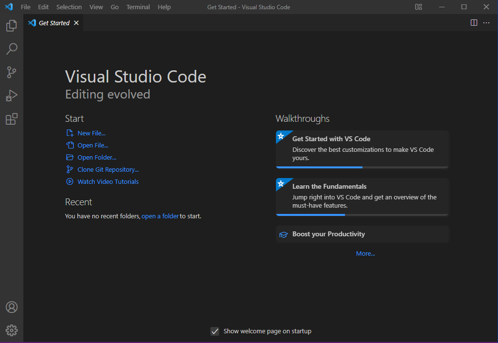
GitHub
GithubGitHub is a web-based hosting service for version control using Git. It is mostly used for computer code. It offers all of the distributed version control and source code management (SCM) functionality of Git as well as adding its own features. It provides access control and several collaboration features such as bug tracking, feature requests, task management, and wikis for every project.
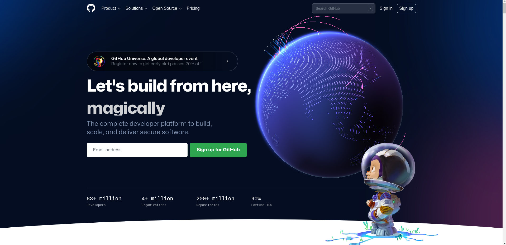
Colab
ColabColaboratory, or "Colab" for short, allows you to write and execute Python in your browser, with zero configuration required, free access to GPUs, and easy sharing. Whether you're a student, researcher or an industry professional, Colab can make your work easier.
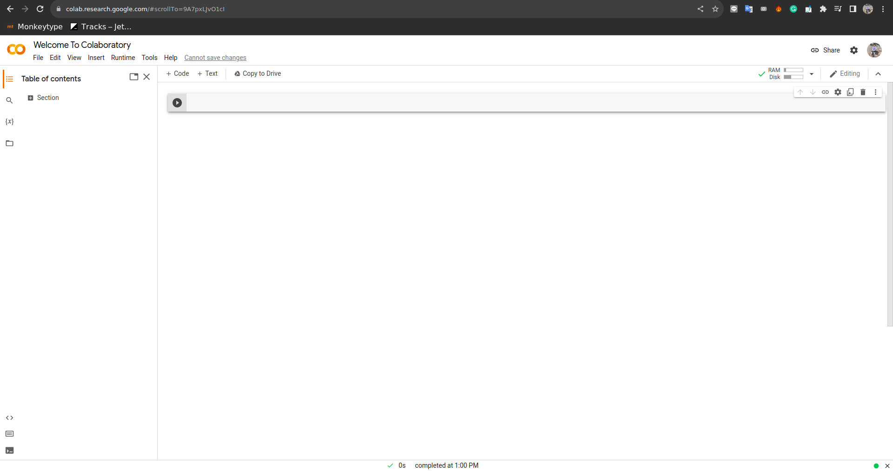
EXTENTSIONS
Drawio integration
use drawio to draw diagrams and export them to png, svg, or xml files.
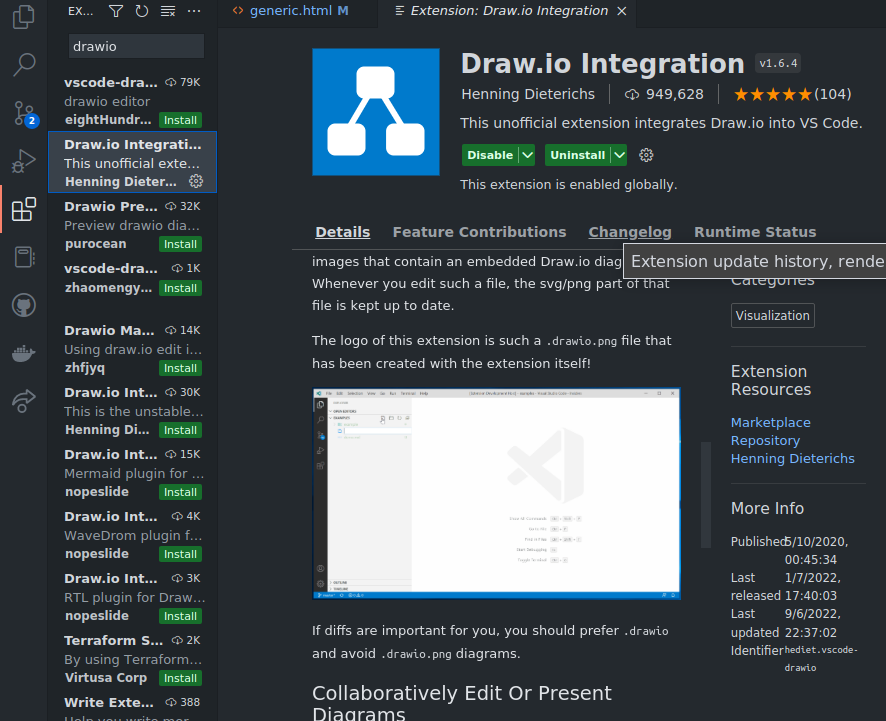
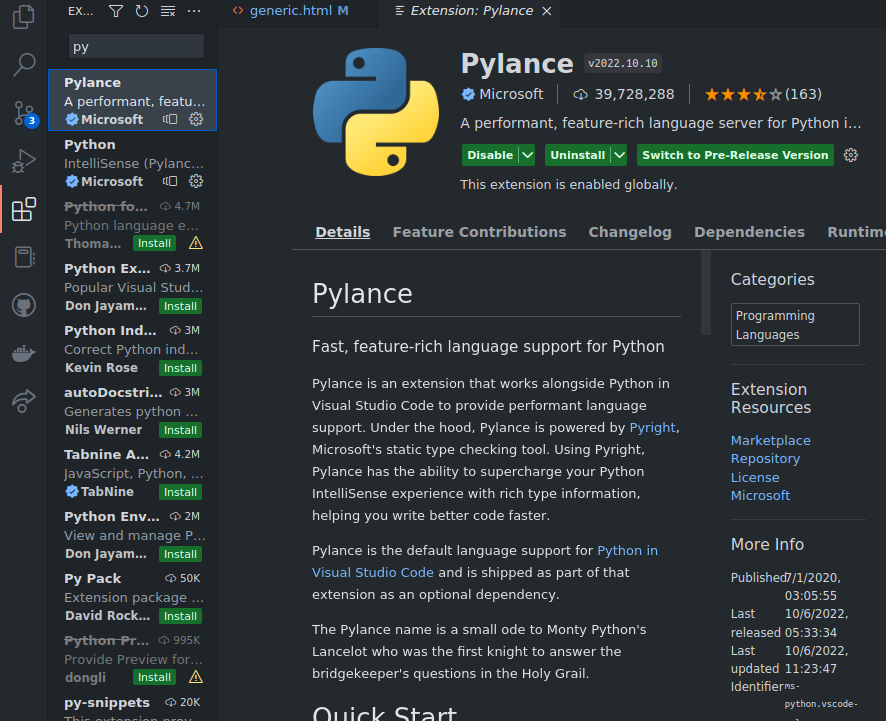
Pylance
Pylance is an extension that works alongside Python in Visual Studio Code to provide performant language support. Under the hood, Pylance is powered by Pyright, Microsoft's static type checking tool. Using Pyright, Pylance has the ability to supercharge your Python IntelliSense experience with rich type information, helping you write better code faster.
Github classroom
The GitHub Classroom extension allows you to browse your classroom assignments, and begin working on them in a single-click. You can open assignments, sync your progress back to GitHub, and see auto-grading test results, directly within Visual Studio Code. When working on a group assignment, you can view the other students in your group
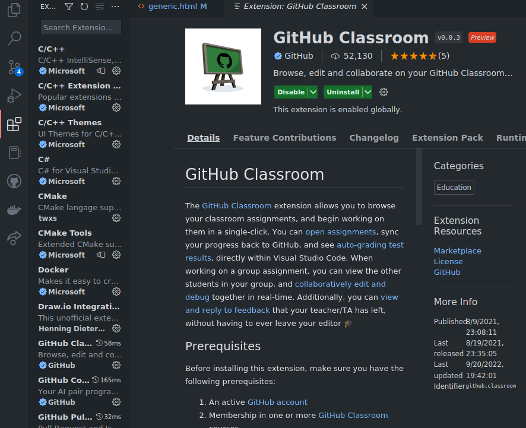
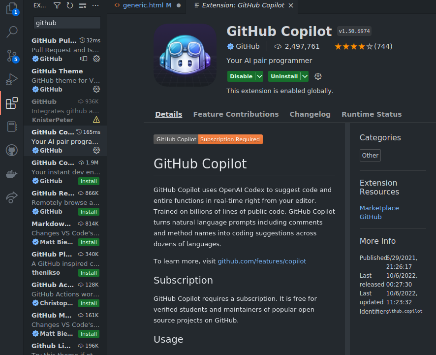
Github copilot
Copilot is a new AI-powered code-completion tool that helps you write code faster and more efficiently. Copilot is available in Visual Studio Code as an extension. It uses machine learning to understand your code and suggest the next line of code you should write. Copilot is available in beta for Python, JavaScript, TypeScript, and Java.
Github
This extension allows you to review and manage GitHub pull requests and issues in Visual Studio Code.
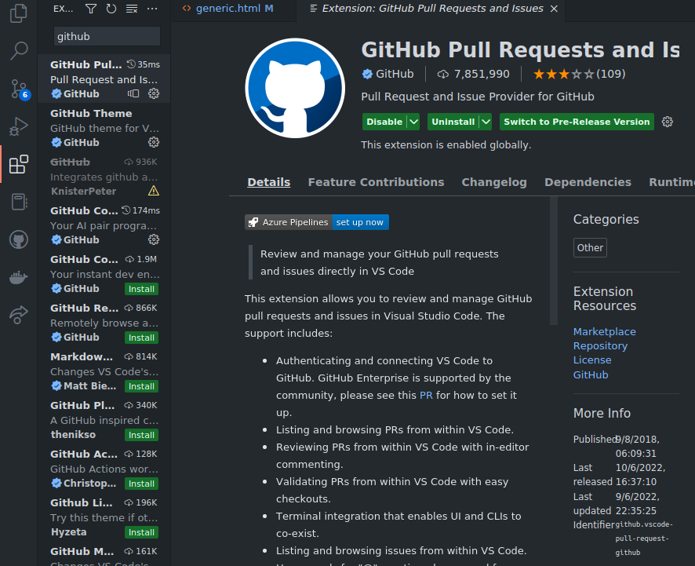
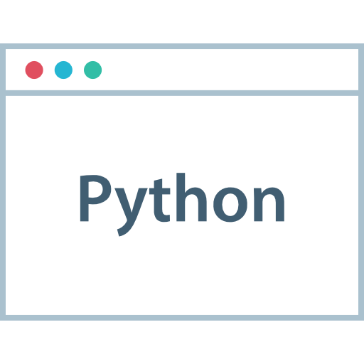